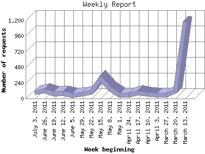

The Weekly Report identifies the activity for each week within the report
time frame. Remember that one page hit can result in several server requests
as the images for each page are loaded.
Note: Depending on the
report time frame for this report the first and last week may not represent
a full seven day week, resulting in lower hits.

| Week beginning | Number of requests | Number of page requests | |
|---|---|---|---|
| 1. | March 13, 2011 | 1,184 | 362 |
| 2. | March 20, 2011 | 107 | 32 |
| 3. | March 27, 2011 | 55 | 14 |
| 4. | April 3, 2011 | 57 | 15 |
| 5. | April 10, 2011 | 65 | 19 |
| 6. | April 17, 2011 | 86 | 24 |
| 7. | April 24, 2011 | 57 | 12 |
| 8. | May 1, 2011 | 56 | 18 |
| 9. | May 8, 2011 | 151 | 69 |
| 10. | May 15, 2011 | 305 | 114 |
| 11. | May 22, 2011 | 94 | 35 |
| 12. | May 29, 2011 | 66 | 50 |
| 13. | June 5, 2011 | 51 | 49 |
| 14. | June 12, 2011 | 76 | 33 |
| 15. | June 19, 2011 | 73 | 47 |
| 16. | June 26, 2011 | 117 | 70 |
| 17. | July 3, 2011 | 85 | 35 |
Most active week beginning March 13, 2011 : 362 pages sent. 1,184 requests handled.
Weekly average: 58 pages sent. 157 requests handled.
This report was generated on July 7, 2011 15:07.
Report time frame March 13, 2011 10:23 to July 6, 2011 09:23.
| Web statistics report produced by: analog 6.0 / Report Magic 2.21 |